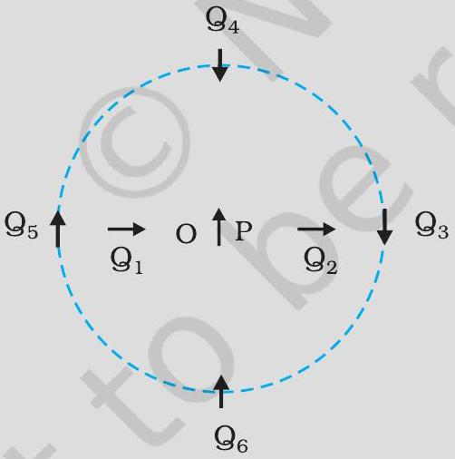
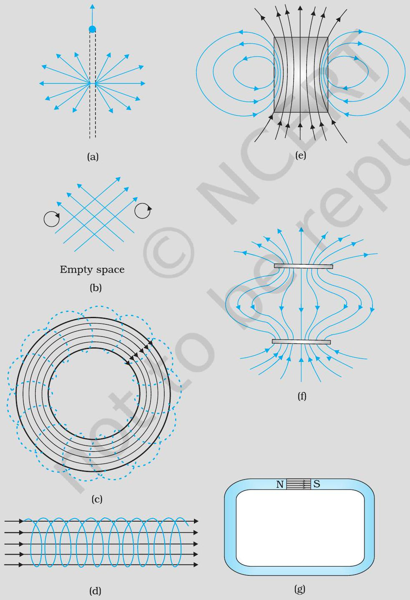
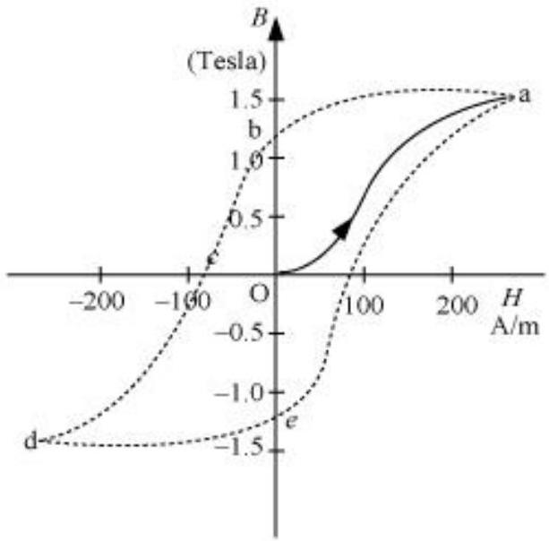

(a) What happens if a bar magnet is cut into two pieces: (i) transverse to its length, (ii) along its length? (b) A magnetised needle in a uniform magnetic field experiences a torque but no net force. An iron nail near a bar magnet, however, experiences a force of attraction in addition to a torque. Why? (c) Must every magnetic configuration have a north pole and a south pole? What about the field due to a toroid? (d) Two identical looking iron bars A and B are given, one of which is definitely known to be magnetised. (We do not know which one.) How would one ascertain whether or not both are magnetised? If only one is magnetised, how does one ascertain which one? [Use nothing else but the bars A and B.]
Part (a)
What happens if a bar magnet is cut into two pieces: (i) transverse to its length, (ii) along its length?
Part (b)
A magnetised needle in a uniform magnetic field experiences a torque but no net force. An iron nail near a bar magnet, however, experiences a force of attraction in addition to a torque. Why?
Part (c)
Must every magnetic configuration have a north pole and a south pole? What about the field due to a toroid?
Part (d)
Two identical looking iron bars A and B are given, one of which is definitely known to be magnetised. (We do not know which one.) How would one ascertain whether or not both are magnetised? If only one is magnetised, how does one ascertain which one? [Use nothing else but the bars A and B.]
Figure 5.4 shows a small magnetised needle P placed at a point O. The arrow shows the direction of its magnetic moment. The other arrows show different positions (and orientations of the magnetic moment) of another identical magnetised needle Q. (a) In which configuration the system is not in equilibrium? (b) In which configuration is the system in (i) stable, and (ii) unstable equilibrium? (c) Which configuration corresponds to the lowest potential energy among all the configurations shown?

Part (a)
In which configuration the system is not in equilibrium?
Part (b)
In which configuration is the system in (i) stable, and (ii) unstable equilibrium?
Part (c)
Which configuration corresponds to the lowest potential energy among all the configurations shown?
Many of the diagrams given in Fig. 5.6 show magnetic field lines (thick lines in the figure) wrongly. Point out what is wrong with them. Some of them may describe electrostatic field lines correctly. Point out which ones.

Can a system have magnetic moments even though its net charge is zero?
Part (a)
Magnetic field lines show the direction (at every point) along which a small magnetised needle aligns (at the point). Do the magnetic field lines also represent the lines of force on a moving charged particle at every point?
Part (b)
If magnetic monopoles existed, how would the Gauss's law of magnetism be modified?
Part (c)
Does a bar magnet exert a torque on itself due to its own field? Does one element of a current-carrying wire exert a force on another element of the same wire?
Part (d)
Magnetic field arises due to charges in motion. Can a system have magnetic moments even though its net charge is zero?
A solenoid has a core of a material with relative permeability 400. The windings of the solenoid are insulated from the core and carry a current of 2A. If the number of turns is 1000 per metre, calculate (a) H, (b) M, (c) B and (d) the magnetising current Im.
A short bar magnet placed with its axis at 30° with a uniform external magnetic field of 0.25 T experiences a torque of magnitude equal to 4.5 × 10‑2 J. What is the magnitude of magnetic moment of the magnet?
A short bar magnet of magnetic moment m = 0.32 JT‑1 is placed in a uniform magnetic field of 0.15 T. If the bar is free to rotate in the plane of the field, which orientation would correspond to its (a) stable, and (b) unstable equilibrium? What is the potential energy of the magnet in each case?
Part (a)
Stable equilibrium orientation - what orientation, and what is the potential energy of the magnet in this case?
Part (b)
Unstable equilibrium orientation - what orientation, and what is the potential energy of the magnet in this case?
A closely wound solenoid of 800 turns and area of cross section 2.5 × 10‑4 m2 carries a current of 3.0 A. Explain the sense in which the solenoid acts like a bar magnet. What is its associated magnetic moment?
If the solenoid in Exercise 5.5 is free to turn about the vertical direction and a uniform horizontal magnetic field of 0.25 T is applied, what is the magnitude of torque on the solenoid when its axis makes an angle of 30° with the direction of applied field?
A bar magnet of magnetic moment 1.5 J T‑1 lies aligned with the direction of a uniform magnetic field of 0.22 T. (a) What is the amount of work required by an external torque to turn the magnet so as to align its magnetic moment: (i) normal to the field direction, (ii) opposite to the field direction? (b) What is the torque on the magnet in cases (i) and (ii)?
Part (a)
What is the amount of work required by an external torque to turn the magnet so as to align its magnetic moment: (i) normal to the field direction, (ii) opposite to the field direction?
Part (b)
What is the torque on the magnet in cases (i) and (ii)?
A closely wound solenoid of 2000 turns and area of cross-section 1.6 × 10‑4 m2, carrying a current of 4.0 A, is suspended through its centre allowing it to turn in a horizontal plane.
Part (a)
What is the magnetic moment associated with the solenoid?
Part (b)
What is the force and torque on the solenoid if a uniform horizontal magnetic field of 7.5 × 10‑2 T is set up at an angle of 30° with the axis of the solenoid?
A short bar magnet has a magnetic moment of 0.48 J T‑1. Give the direction and magnitude of the magnetic field produced by the magnet at a distance of 10 cm from the centre of the magnet on (a) the axis, (b) the equatorial lines (normal bisector) of the magnet.
Part (a)
Give the direction and magnitude of the magnetic field produced by the magnet at a distance of 10 cm from the centre of the magnet on the axis.
Part (b)
Give the direction and magnitude of the magnetic field produced by the magnet at a distance of 10 cm from the centre of the magnet on the equatorial lines (normal bisector) of the magnet.
Answer the following questions regarding earth's magnetism: A vector needs three quantities for its specification. Name the three independent quantities conventionally used to specify the earth's magnetic field. The angle of dip at a location in southern India is about 18°. Would you expect a greater or smaller dip angle in Britain? If you made a map of magnetic field lines at Melbourne in Australia, would the lines seem to go into the ground or come out of the ground? In which direction would a compass free to move in the vertical plane point to, if located right on the geomagnetic north or south pole? The earth's field, it is claimed, roughly approximates the field due to a dipole of magnetic moment 8 × 1022 J T‑1 located at its centre. Check the order of magnitude of this number in some way. (f ) Geologists claim that besides the main magnetic N-S poles, there are several local poles on the earth's surface oriented in different directions. How is such a thing possible at all?
Answer the following questions: The earth's magnetic field varies from point to point in space. Does it also change with time? If so, on what time scale does it change appreciably? The earth's core is known to contain iron. Yet geologists do not regard this as a source of the earth's magnetism. Why? The charged currents in the outer conducting regions of the earth's core are thought to be responsible for earth's magnetism. What might be the 'battery' (i.e., the source of energy) to sustain these currents? The earth may have even reversed the direction of its field several times during its history of 4 to 5 billion years. How can geologists know about the earth's field in such distant past? The earth's field departs from its dipole shape substantially at large distances (greater than about 30,000 km ). What agencies may be responsible for this distortion? (f) Interstellar space has an extremely weak magnetic field of the order of 10-12 T. Can such a weak field be of any significant consequence? Explain. [Note: Exercise 5.2 is meant mainly to arouse your curiosity. Answers to some questions above are tentative or unknown. Brief answers wherever possible are given at the end. For details, you should consult a good text on geomagnetism.]
A circular coil of 16 turns and radius 10 cm carrying a current of 0.75 A rests with its plane normal to an external field of magnitude 5.0 × 10‑2 T. The coil is free to turn about an axis in its plane perpendicular to the field direction. When the coil is turned slightly and released, it oscillates about its stable equilibrium with a frequency of 2.0 s‑1. What is the moment of inertia of the coil about its axis of rotation?
A magnetic needle free to rotate in a vertical plane parallel to the magnetic meridian has its north tip pointing down at 22° with the horizontal. The horizontal component of the earth's magnetic field at the place is known to be 0.35 G. Determine the magnitude of the earth's magnetic field at the place.
At a certain location in Africa, a compass points 12° west of the geographic north. The north tip of the magnetic needle of a dip circle placed in the plane of magnetic meridian points 60° above the horizontal. The horizontal component of the earth's field is measured to be 0.16 G. Specify the direction and magnitude of the earth's field at the location.
A short bar magnet placed in a horizontal plane has its axis aligned along the magnetic north-south direction. Null points are found on the axis of the magnet at 14 cm from the centre of the magnet. The earth's magnetic field at the place is 0.36 G and the angle of dip is zero. What is the total magnetic field on the normal bisector of the magnet at the same distance as the null-point (i.e., 14 cm ) from the centre of the magnet? (At null points, field due to a magnet is equal and opposite to the horizontal component of earth's magnetic field.)
If the bar magnet in exercise 5.13 is turned around by 180°, where will the new null points be located?
A short bar magnet of magnetic moment 5.25 × 10‑2 J T‑1 is placed with its axis perpendicular to the earth's field direction. At what distance from the centre of the magnet, the resultant field is inclined at 45° with earth's field on its normal bisector and (b) its axis. Magnitude of the earth's field at the place is given to be 0.42 G. Ignore the length of the magnet in comparison to the distances involved.
Answer the following questions: Why does a paramagnetic sample display greater magnetisation (for the same magnetising field) when cooled? Why is diamagnetism, in contrast, almost independent of temperature? If a toroid uses bismuth for its core, will the field in the core be (slightly) greater or (slightly) less than when the core is empty? Is the permeability of a ferromagnetic material independent of the magnetic field? If not, is it more for lower or higher fields? Magnetic field lines are always nearly normal to the surface of a ferromagnet at every point. (This fact is analogous to the static electric field lines being normal to the surface of a conductor at every point.) Why? (f ) Would the maximum possible magnetisation of a paramagnetic sample be of the same order of magnitude as the magnetization of a ferromagnet?
Answer the following questions: Explain qualitatively on the basis of domain picture the irreversibility in the magnetisation curve of a ferromagnet. The hysteresis loop of a soft iron piece has a much smaller area than that of a carbon steel piece. If the material is to go through repeated cycles of magnetisation, which piece will dissipate greater heat energy? 'A system displaying a hysteresis loop such as a ferromagnet, is a device for storing memory?' Explain the meaning of this statement. What kind of ferromagnetic material is used for coating magnetic tapes in a cassette player, or for building 'memory stores' in a modern computer? A certain region of space is to be shielded from magnetic fields. Suggest a method.

A long straight horizontal cable carries a current of 2.5 A in the direction 10° south of west to 10° north of east. The magnetic meridian of the place happens to be 10° west of the geographic meridian. The earth's magnetic field at the location is 0.33 G, and the angle of dip is zero. Locate the line of neutral points (ignore the thickness of the cable). (At neutral points, magnetic field due to a current-carrying cable is equal and opposite to the horizontal component of earth's magnetic field.)
A telephone cable at a place has four long straight horizontal wires carrying a current of 1.0 A in the same direction east to west. The earth's magnetic field at the place is 0.39 G, and the angle of dip is 35°. The magnetic declination is nearly zero. What are the resultant magnetic fields at points 4.0 cm below the cable?
A compass needle free to turn in a horizontal plane is placed at the centre of circular coil of 30 turns and radius 12 cm. The coil is in a vertical plane making an angle of 45° with the magnetic meridian. When the current in the coil is 0.35 A, the needle points west to east. Determine the horizontal component of the earth's magnetic field at the location. The current in the coil is reversed, and the coil is rotated about its vertical axis by an angle of 90° in the anticlockwise sense looking from above. Predict the direction of the needle. Take the magnetic declination at the places to be zero.
A magnetic dipole is under the influence of two magnetic fields. The angle between the field directions is 60o, and one of the fields has a magnitude of 1.2 × 10‑2 T. If the dipole comes to stable equilibrium at an angle of 15° with this field, what is the magnitude of the other field?
A monoenergetic (18 keV) electron beam initially in the horizontal direction is subjected to a horizontal magnetic field of 0.04 G normal to the initial direction. Estimate the up or down deflection of the beam over a distance of 30 cm(me = 9.11 × 10‑19 C). [Note: Data in this exercise are so chosen that the answer will give you an idea of the effect of earth's magnetic field on the motion of the electron beam from the electron gun to the screen in a TV set.]
A sample of paramagnetic salt contains 2.0 × 1024 atomic dipoles each of dipole moment 1.5 × 10‑23 J T‑1. The sample is placed under a homogeneous magnetic field of 0.64 T , and cooled to a temperature of 4.2 K. The degree of magnetic saturation achieved is equal to 15\%. What is the total dipole moment of the sample for a magnetic field of 0.98 T and a temperature of 2.8 K? (Assume Curie's law)
A Rowland ring of mean radius 15 cm has 3500 turns of wire wound on a ferromagnetic core of relative permeability 800 . What is the magnetic field B in the core for a magnetising current of 1.2 A?
The magnetic moment vectors μs and μl associated with the intrinsic spin angular momentum S and orbital angular momentum I, respectively, of an electron are predicted by quantum theory (and verified experimentally to a high accuracy) to be given by: